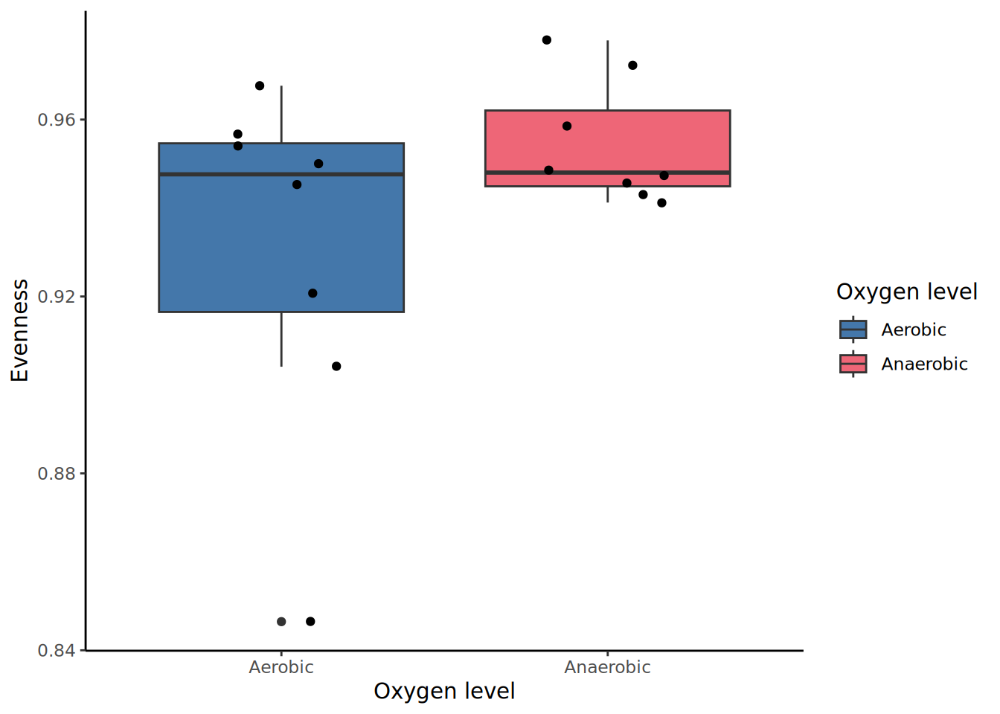
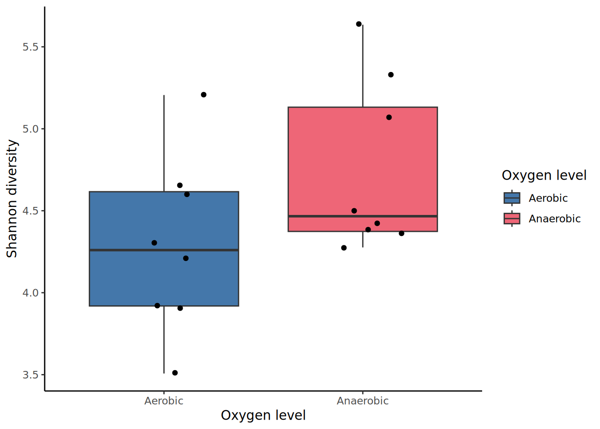
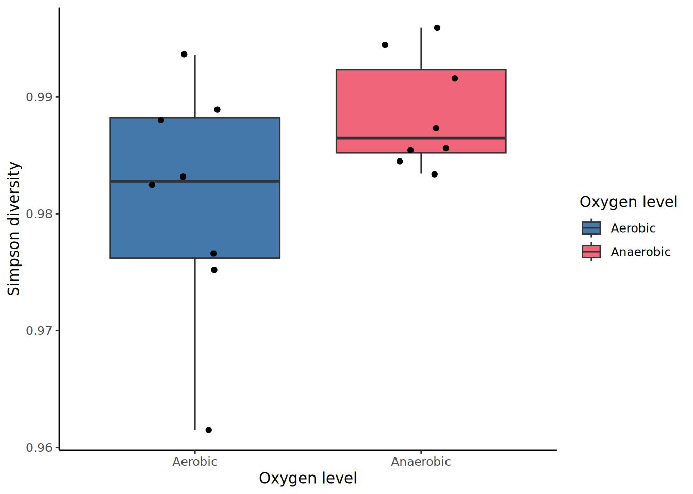
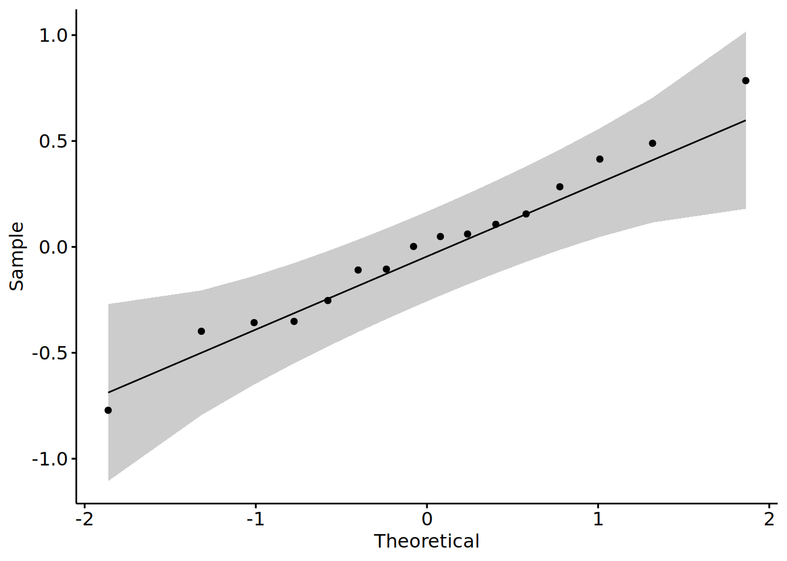
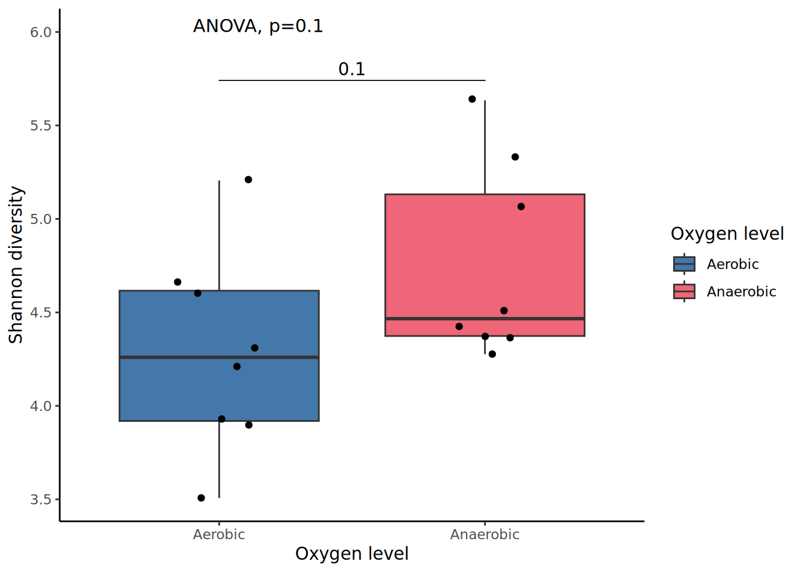

library(tidyverse)
library(vegan)
library(patchwork)
library(agricolae)
library(ggpubr)
#import our ASV, taxa, and metadata tables
rarefied_filtered_asv_count.data <- read.table(file="rarefied_filtered_asv_abundance_table.txt", sep = " ",
header = TRUE, quote = "\"", check.names = FALSE,
stringsAsFactors = FALSE)
asv_relative_abundance.data <- read.table(file="relative_rarefied_filtered_asv_abundance_table.txt", sep = " ",
header = TRUE, quote = "\"", check.names = FALSE,
stringsAsFactors = FALSE)
filtered_taxa.data <- read.table(file = "filtered_taxonomy_table.txt", sep = " ",
header = TRUE, quote = "\"", check.names = FALSE,
stringsAsFactors = FALSE)
meta.data <- read.csv("sample_metadata.csv")Data viz
Overview
So far, we have produced the following data tables:
An amplicon sequence variant (ASV) count table (
rarefied_filtered_asv_count.data) which has:Been filtered to remove unwanted ASVs
Been normalized to rarefy samples
An amplicon sequence variant (ASV) count table (
asv_relative_abundance.data) which has:Been filtered to remove unwanted ASVs
Been normalized to rarefy samples
Had counts converted to relative abundance (%)
We’ll also be working with a metadata table (meta.data) which represents metadata information for the different samples.
In this session, we will:
Define, calculate and interpret alpha-diversity indices.
Explore beta-diversity using Principal Covariates Analysis (PCoA).
Visualize and interpret the bacterial community composition for the different samples and variables.
Determine the core microbiome.
Discussion point
Most datasets will have have multiple variables with an underlying experimental design. What would be your first idea to analyze this data?
Learning objectives
By the end of today’s session, you should be able to:
Describe the differences between alpha and beta diversity
Describe the differences between different types of alpha diversity metrics
Create diversity metric and relative abundance plots
Calculating diversity indices
Two common diversity measures reported in microbiome studies are alpha and beta diversity:
Alpha diversity describes the species richness, evenness, or presence alone within a sample.
Beta-diversity measures compare the similarity of two or more communities.
Alpha diversity
Alpha diversity represents diversity within a sample. In other words, what is there and how much is there in terms of species. It is not always easy to define a species. Fortunately, we can calculate alpha diversity at different taxonomic levels. In this tutorial, we are looking at the ASV level.
Several alpha diversity indices can be calculated. Each index take into account different factors, which gives them unique advantages for assessing diversity within a sample:
Richness represents the total number of of distinct units observed within a sample. In our case, these are ASVs.
Chao1 estimates total richness. This prioritizes detection of rare species within a sample.
Pielou’s evenness provides information about the equity in species abundance in each sample. In other words, do all species have similar abundances, or do some species dominate?
Shannon index is based on richness & evenness and prioritizes spread of species within a sample.
Considerations around when to use raw or filtered data
Alpha diversity should be calculated from the raw ASV count data (rarefied_filtered_asv_count.data) and not from relative abundance data.
It is important to not use (numerically) filtered count data because many richness estimates are modeled on singletons and doubletons in the ASV count table. This means we need them to keep them in the dataset to meaningfully estimate richness.
Similarly, we typically do not use normalized data because we are not comparing samples to each other, but rather assessing diversity within each sample.
Note: these are really metrics to help contrast our samples within an experiment. Alpha diversity metrics should not be considered “true” values or be compared across studies.
Load the required packages and objects:
Calculating alpha diversity metrics
Here we are using the estimateR() and diversity() functions from the vegan package to calculate alpha diversity metrics.
Calculate richness: The estimateR() function estimates two richness types: bias-corrected Chao Chiu et al., 2014 and ACE O’Hara 2005.
#estimate richness using ASV count data
alpha_richness <- estimateR(rarefied_filtered_asv_count.data)Calculate evenness: The diversity() function can be used to estimate evenness, Shannon, and Simpson diversity indices.
#calculate evenness
alpha_evenness <- diversity(rarefied_filtered_asv_count.data) / log(specnumber(rarefied_filtered_asv_count.data))
#calculate Shannon diversity
alpha_shannon <- diversity(rarefied_filtered_asv_count.data, index="shannon")
#calculate Simpson diversity
alpha_simpson <- diversity(rarefied_filtered_asv_count.data, index="simpson")
#combine all indices into one alpha diversity data object
alpha_diversity <- cbind(meta.data, t(alpha_richness), alpha_evenness, alpha_shannon, alpha_simpson)
#remove rownames
rownames(alpha_diversity) <- NULL
#check out the new data
glimpse(alpha_diversity)
#if you don't want to visualize your controls, drop rows with N/A values to remove them
alpha_diversity <- drop_na(alpha_diversity)Visualizing alpha diversity metrics
Plot richness (number of species observed):
#plot the four alpha diversity indices
alpha_richness.plot <- ggplot(alpha_diversity, aes(x=Oxygen_Level, y=S.obs)) +
geom_boxplot(aes(fill=Oxygen_Level)) + #add a boxplot
scale_fill_manual(values=c("#4477AA","#EE6677"), name="Oxygen level") + #custom colour palette and legend title
geom_jitter(width=0.2) + #add points
ylab("Observed richness") + #y axis label
xlab("Oxygen level") + #x axis label
theme_classic() #plot theme
alpha_richness.plot
Plot evenness:
alpha_evenness.plot <- ggplot(alpha_diversity, aes(x=Oxygen_Level, y=alpha_evenness)) +
geom_boxplot(aes(fill=Oxygen_Level)) + #add a boxplot
scale_fill_manual(values=c("#4477AA","#EE6677"), name="Oxygen level") + #custom colour palette and legend title
geom_jitter(width=0.2) + #add points
ylab("Evenness") + #y axis label
xlab("Oxygen level") + #x axis label
theme_classic() #plot theme
alpha_evenness.plot
Plot Shannon diversity:
alpha_shannon.plot <- ggplot(alpha_diversity, aes(x=Oxygen_Level, y=alpha_shannon)) +
geom_boxplot(aes(fill=Oxygen_Level)) + #add a boxplot
scale_fill_manual(values=c("#4477AA","#EE6677"), name="Oxygen level") + #custom colour palette and legend title
geom_jitter(width=0.2) + #add points
ylab("Shannon diversity") + #y axis label
xlab("Oxygen level") + #x axis label
theme_classic() #plot theme
alpha_shannon.plot
Plot Simpson diversity:
alpha_simpson.plot <- ggplot(alpha_diversity, aes(x=Oxygen_Level, y=alpha_simpson)) +
geom_boxplot(aes(fill=Oxygen_Level)) + #add a boxplot
scale_fill_manual(values=c("#4477AA","#EE6677"), name="Oxygen level") + #custom colour palette and legend title
geom_jitter(width=0.2) + #add points
ylab("Simpson diversity") + #y axis label
xlab("Oxygen level") + #x axis label
theme_classic() #plot theme
alpha_simpson.plot
Discussion point
- How many ASVs are observed across the different treatments?
- How do you interpret the Evenness and Shannon plots?
- Are there big differences between samples belonging to the same treatment? Are there big differences between treatments? How could you check this?
Statistical analyses
Checking the normality assumption
Now we’ll use statistical tests to test whether there are any significant differences between treatments. For this step, we’ll be looking at the Shannon diversity metric.
Before running significance tests, we need to know if data is normally distributed, which will tell use whether to use a parametric or non-parametric test. To test if the data are normally distributed, we will use the Shapiro-Wilk Normality test.
- If the p-values are both not significant (p > 0.05) from the tests, we accept the null hypothesis (that the results are normally distributed) and test for significance between samples using parametric tests e.g., t-test and ANOVA).
summary(aov(metric ~ variable, data = alpha_diversity))
- If the p-values are both significant (p < 0.05), we reject the null hypothesis (that the results are normally distributed) and test for significance between samples using non-parametric tests e.g., Wilcoxon and Kruskal-Wallis).
kruskal.test(metric ~ variable, data = alpha_diversity)
#create a linear model with lm() function
model <- lm(alpha_shannon ~ Oxygen_Level + Nutrient_Source + Inoculant_Source + Steep_Time,
data = alpha_diversity)
# Create a QQ plot of residuals
ggqqplot(residuals(model))
#perform normality tests on richness metric
shapiro.test(alpha_diversity$S.obs)
Shapiro-Wilk normality test
data: alpha_diversity$S.obs
W = 0.81482, p-value = 0.004314#perform normality tests on shannon divesity metric
shapiro.test(alpha_diversity$alpha_shannon)
Shapiro-Wilk normality test
data: alpha_diversity$alpha_shannon
W = 0.96181, p-value = 0.6947#perform normality tests on simpson divesity metric
shapiro.test(alpha_diversity$alpha_simpson)
Shapiro-Wilk normality test
data: alpha_diversity$alpha_simpson
W = 0.89843, p-value = 0.07584Performing an omnibus test
#for normally distributed data, we can perform an ANOVA omnibus test
shannon_aov <- aov(alpha_shannon ~ Oxygen_Level, data = alpha_diversity)
summary(shannon_aov) Df Sum Sq Mean Sq F value Pr(>F)
Oxygen_Level 1 0.836 0.8361 3.025 0.104
Residuals 14 3.870 0.2764
Considerations for your own data
Is your data normally distributed?
Do any of your treatments or variables have an effect on alpha diversity?
Post-hoc tests
An omnibus test (e.g., ANOVA or Kruskal-Wallis) may tell us that there is significant difference between the treatments, but we don’t know which treatment is significantly different from the others. In order to know what are the differences among the treatments/variable levels, we can perform a post-hoc test:
- For normally distributed data, we can test for significance between samples using a parametric test (Tukey’s Honest Significant Difference).
TukeyHSD(metric_aov)
- For data that is not normally distributed, we can test for significance between samples using a non-parametric test (e.g., Dunn, Nemenyi).
Considerations for your own data
- How many levels does your variable of interest have? There is little use to performing a post-hoc test on a variable with only two levels.
Visualizing plots with statistics
alpha_shannon_stats.plot <- ggplot(alpha_diversity, aes(x=Oxygen_Level, y=alpha_shannon)) +
geom_boxplot(aes(fill=Oxygen_Level)) + #add a boxplot
scale_fill_manual(values=c("#4477AA","#EE6677"),
name="Oxygen level") + #custom colour palette and legend title
geom_jitter(width=0.2) + #add points
ylab("Shannon diversity") + #y axis label
xlab("Oxygen level") + #x axis label
theme_classic() + #plot theme
stat_compare_means(method = "anova",size=4,
aes(label = paste0("ANOVA, p=", ..p.format..)), label.y=6) +
geom_pwc(aes(group = Oxygen_Level), #add t-test
tip.length = 0,
method = "t_test",
label = "p.adj.format",
p.adjust.method = "fdr") # false discovery rate adjusted p-value
alpha_shannon_stats.plot
Considerations for your own data
Using bullet points, write down everything you notice about the plots you produced.
What do you understand? What do you find confusing?
If you were going to publish these plots in a scientific paper, what features would you want to improve or add?
Now try plotting and running a statistical comparison for another variable. Adjust the necessary parameters and objects from the code above to assess a new variable’s levels. Which do you think may have the strongest impact on the final microbiome composition?
Beta diversity
While alpha-diversity represents the diversity within a sample, beta-diversity represents the difference between two samples. In other word, how similar or different are two samples?
Beta-diversity is a distance between two samples. Microbial ecologists do not use Euclidean distances. Bray-Curtis, Jaccard or weight/unweight Unifrac distances are more frequently to estimate the beta diversity:
Bray-Curtis dissimilarity is based on occurrence data (abundance).
Jaccard distance is based on presence/absence data (does not include abundance information).
UniFrac distances take into account the occurrence table and the phylogenetic diversity (sequence distance). Weighted or unweighted UniFrac distances depending if taking into account relative abundance or only presence/absence.
Distances metrics are between 0 and 1, where 0 means identical communities in both samples and 1 means different communities in both samples.
Considerations around when to use raw or filtered data
Beta diversity is calculated using filtered, normalized, and rarified data (rarefied_filtered_asv_count.data).
Calculate beta diversity:
# calculate Bray-Curtis distance using the vegan package
bc_dist <- as.matrix(vegdist(rarefied_filtered_asv_count.data, method = "bray"))
#look at the first 5 rows
bc_dist[1:5,1:5]Visualizing high-dimensional data with ordination techniques
Ordinations techniques let us visualize high-dimensional data through dimensional reduction. In a nutshell, these techniques reduce high-dimensional data into a smaller number of dimensions so we can actually visualize them in 2D (or 3D). We can then compare samples based on relatedness.
The dimensions are whatever you’ve measured in each sample - in this case, these are our counts for each ASV.
There are several ordination techniques we could potentially use to do this:
Principal Components Analysis
non-metric multidimensional scaling (nMDS)
Today, we’re looking specifically at PCoA visualizations. Best practice would be to visualize your data by PCoA and nMDS.
#perform classic multidimensional scaling (cMDS)
bc_pcoa <- cmdscale(bc_dist,
k=(nrow(bc_dist)-1) #k is number of dimensions/ASVs - 1
, eig=TRUE) #eigenvalues will be generated
#store coordinates for first two principal components (PC) in new variable
bc_pc1and2 <- bc_pcoa$points[,1:2]
#store the eigenvalues in a new variable
bc_eigenvalue <- bc_pcoa$eig
#calculate the percentage of variance explained by PC1 and PC2
percent_explained <-bc_eigenvalue/(sum(bc_eigenvalue))*100
pe_PC1 <-percent_explained[1]
pe_PC2 <-percent_explained[2]
#report the percentage explained
print(paste0("PC1 explains ",signif(pe_PC1,3),"% of variance observed;
PC2 explains ",signif(pe_PC2,3),"% of variance observed."))[1] "PC1 explains 14.2% of variance observed;\n PC2 explains 11.9% of variance observed."#create PCoA summary data
pcoa.data <- data.frame(
Sample = rownames(bc_pc1and2),
PCoA1 = bc_pc1and2[,1],
PCoA2 = bc_pc1and2[,2],
Oxygen_Level = meta.data$Oxygen_Level)
pcoa.plot <- ggplot(pcoa.data, aes(PCoA1, PCoA2, color = Oxygen_Level, fill=Oxygen_Level)) +
geom_point(aes(shape = Oxygen_Level), size = 3, stroke = 1) + #add a scatterplot
scale_color_manual(values=c("grey", "#4477AA","#EE6677")) +
scale_fill_manual(values=c("grey", "#4477AA","#EE6677")) +
labs(x = paste0("PCoA1 (", round(pe_PC1, 2), "% variance explained)"),
y = paste0("PCoA2 (", round(pe_PC2, 2), "% variance explained)"),
color = "Oxygen Level", fill="Oxygen Level", shape="Oxygen Level") +
theme_minimal() #theme with grid background
pcoa.plot
Stop & think
How do you interpret this plot?
What can you say about the total variance explained by this ordination?
What can you say about intra- and inter-group variability?
Considerations for your data
If you want to run an analysis on a subset of your data, you must re-calculate your beta diversity index from the first step.
Statistical analysis
To test whether the groups are different with respect to centroid and dispersion, a PERMANOVA statistical test will be performed. For this, a multi-variate extension of ANOVA will be used, as there are many ASVs that will be used in the test. The extension is based on distances between samples. The test compares distances of samples within the same group to distances of samples from different groups. If the distance between samples from the different groups is much larger than samples from the same group, we conclude that the groups are not equal.
In order to test the significance of the result, a permutation test is used - all samples are randomly mixed over the groups and the test is repeated many times. If the ratio (between group distance / within group distance) is much larger for the original data than for the permutations, we conclude there is a statistical significant difference.
The test can be applied in combination with any distance measure. Here we use the Bray-Curtis distance used for the PCoA above.
First, we will test if there is any significant effect of the treatment/variable:
# PERMANOVA test using the vegan package
adonis2(rarefied_filtered_asv_count.data~Oxygen_Level,data=meta.data, permutations=9999, method="bray")Permutation test for adonis under reduced model
Permutation: free
Number of permutations: 9999
adonis2(formula = rarefied_filtered_asv_count.data ~ Oxygen_Level, data = meta.data, permutations = 9999, method = "bray")
Df SumOfSqs R2 F Pr(>F)
Model 2 0.8584 0.10893 0.9168 0.7151
Residual 15 7.0220 0.89107
Total 17 7.8804 1.00000
Stop & think
How do you interpret this PERMANOVA result?
What can you say about intra- and inter-group variability?
Answers
If the P-value is less than 0.05, we can conclude that the intra-variability is lower than the inter-variability among the two groups and that we have a significant effect.